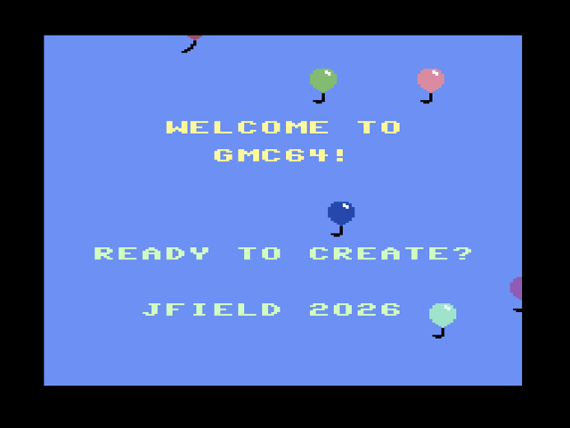

GameMaker, back in the browser.
A faithful, static HTML recreation of Garry Kitchen’s 1985 Commodore 64 game-creation tool. Load old disks, make new games, edit sprites and scenes, then share the result as a link or a single HTML file.

Play
Drop in a `.d64`, pick a program, and run it — without installing VICE or configuring a virtual 1541.
No install
Static HTML and JavaScript. Runs from a browser, even from local files.
Demo disk
Bundled programs and editable assets give you something to poke at immediately.
Embed-ready
Use `play.html` for a chrome-free iframe-friendly player.
Make
Draw sprites, build scenes, compose music, tweak SID-style sounds, and write GameMaker logic in a plain-English instruction list.
Compatibility
GMC64 reads and writes the original GameMaker formats: `.D64`, `.PRG`, `.SPR`, `.PIC`, `.SND`, and `.SNG`.
Old → new
Load work made on original hardware and edit it in the browser.
New → old
Save back to disk images that can load in the original C64 GameMaker.
Share
Export a self-contained HTML game, or deep-link to a disk and program.
Resources
For preservation, tinkering, and falling down the C64 rabbit hole.